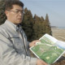
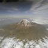
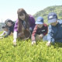
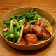
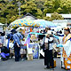

おすすめ特集・連載
-

- 防災・減災しずおか
- 東海、東南海・南海地震に備えて静岡新聞が力を注いでいる地震防災関連のニュースや話題のコーナーです。
-
- 浜岡原発 関連ニュース
- 中部電力浜岡原子力発電所（御前崎市）関連のニュースを静岡新聞の紙面からクリップしてご紹介します。
-

- 世界遺産 富士山
- 静岡新聞社・静岡放送は長く富士山の世界遺産登録運動を応援してきました。富士山関連ニュースはこの特集をチェック！
-

- 静岡茶産地・茶業界動向
- 茶どころ静岡県の地方紙として、茶業界の動向を追い続けている静岡新聞。紙面から関連記事を厳選してお伝えします。
-
- こち女（こちら女性編集室）
- 女性記者でつくるチームが企画、取材、執筆、編集を担当。暮らしや子育て、女性の仕事などにまつわる話題満載です。
-

- くらしず
- 文化生活部の記者が紙面で紹介しきれなかったエピソードや写真、レシピの詳細などをお知らせするブログサイトです。
おいしいものを食べたい！「グルメ特集」
-
- 春爛漫♪桜スイーツ特集
- ほんのり塩味が効いた上品な味わいと、春の香りいっぱいの和風＆洋風テイストの桜スイーツをご紹介
-
- 厳選！子連れママ会
- 春は出会いと別れの季節。卒園入園などでママ会を開く機会も増える時期。子連れでママ会が楽しめる店を厳選！
-
-
-
-
- シズオカ珈琲物語
- 地域別のほか、水出し、スペシャルティコーヒー、自家焙煎などでも検索OK！お店に聞いたこだわり逸話も同時掲載！
週末どうする？「イベント特集」
-
-
-

- フリーマーケット
- 新生活、新学期に向けて揃えたりするならフリーマーケットで探してみては？素敵な物に出会えるかも！
-
-
-